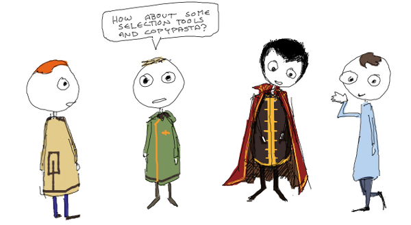

Canvas image filters - my Dublin GTUG talk from June 2011
Drawmore - an HTML5 drawing program with a GUI from hell
 magi - a WebGL scene graph for doing some simple stuff
magi - a WebGL scene graph for doing some simple stuff
 JSARToolKit - port of FLARToolKit to JavaScript and canvas
JSARToolKit - port of FLARToolKit to JavaScript and canvas
 Runfield - an HTML5 Canabalt clone with handpainted graphics by yours truly
Runfield - an HTML5 Canabalt clone with handpainted graphics by yours truly
 WebGL Presentation Editor
WebGL Presentation Editor My WebGL presentation from a Frontend Finland meetup (also available in Finnish)
My WebGL presentation from a Frontend Finland meetup (also available in Finnish)
 Tomtegebra - An algebra game written in Haskell. Features cats and rabbits.
Tomtegebra - An algebra game written in Haskell. Features cats and rabbits.
 Filezoo - a minimalistic zoomable file manager written in C#
Filezoo - a minimalistic zoomable file manager written in C#
 SimpleClock - A simple C# analog clock app
SimpleClock - A simple C# analog clock app
Etc.
mixarr - JavaScript array library mixin for the heck of it
gitbug - in-repo git bug tracker
gitnuts - summarizes git log output, also outputs SQL
metadata - File metadata extraction library for Ruby. Uses a bazillion different tools for extraction. Comes with shell commands.
thumbnailer - File thumbnailing library for Ruby. Uses a bazillion different tools for thumbnailing. Comes with shell commands.
preludeml - OCaml port of Haskell's Prelude (and then some)